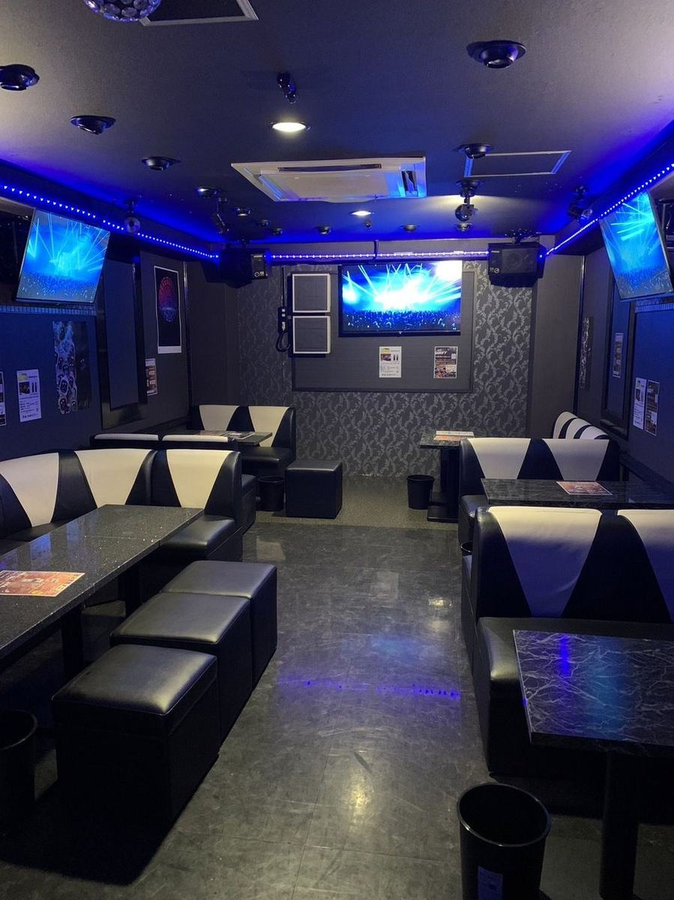

大森で深夜まで飲めるバー
大森駅東口から歩いてすぐ。BAR NOCTは時間無制限3,300円で飲んで歌える深夜バーです。終わりの時間を決めない夜はここへ。

BAR NOCT
大森駅東口・時間無制限3,300円で歌って飲める深夜バー
- 営業時間 毎日 19:00〜LAST
- スタイル 時間無制限3,300円で飲んで歌える / ダーツあり
- 場所 大森駅東口 徒歩圏 / 東京都大田区大森北1-13-11 ダイヤビル3F
「とにかく安い！初めて行ったけど店員さんも気軽に喋れて楽しく安く飲めました」— Googleマップのクチコミより(原文抜粋)
詳細・料金を見る📞 電話するこんな夜に
仕事帰りの一杯から深夜まで、時間を気にせず飲みたい夜に。時間無制限3,300円だから終わり時間を決めずに歌って飲めます。飲み会の二次会にも。
団体・貸切なら
10名以上なら箱ごと貸切もできます(飲み放題込みで1人1時間1,500円以下)。
貸切のご案内 / よくある質問 / お客様の声